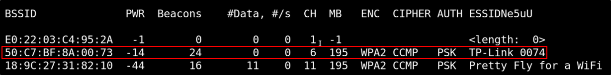
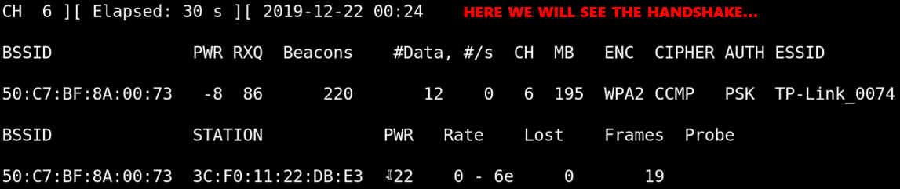

First step to do is to plug in your network card and se up in VM:
We can check for wireless interfaces with iwconfig
We need to set out wireless card into monitor mode, to sniff packets:
First of all, check for some processes that can cause troubles:
We are going to check for some harmful processes to kill...
(we are going to use airmon-ng)
... and start our network interface:
Now it is in Monitor mode and it is called wlan0mon
Now, to dump some packets, we need to start airodump-ng on our wireless interface:
The SSID of the network will be told from the customer (SSID = Wireless Name)
Now we should be listening on networks:
Legend: BSSID: The MAC Address of the access point PWR: Bigger the number, closer it is (-11 is closer than -47) ENC: Encryption type AUTH: Authentication method ESSID: Wireless name (SSID in short)
You can discover hidden networks like length: 21
Let's suppose we want to attack the TP-LINK router/access point: 
Now, we can choose the channel, BSSID to capture. We can choose a file to write in too
Last argument is the Wireless Interface to listen into:
Now we are listening to the specified router, and we are waiting for an handshake.
Down below we can see the host attacked to the router: 
To speedup the process, we can send a DeAuth packet to someone attached on the network,
and capture the handshake if it try to reauthenticate:
So open a new terminal and use aireplay-ng: -0: Deauth attack
1: Number of times to do that
-a: Your router BSSID
-c: Your target BSSID
Now, looking back at the airdump-ng screen, we will see that we have a WPA Handshake!!
Once we captured the handshake, we need to crack that.